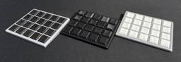
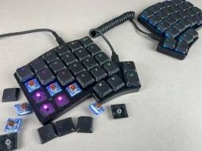
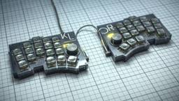
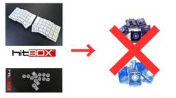
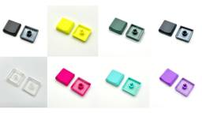
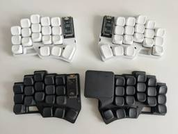

TALPKEYBOARD BLOG
https://www.talpkeyboard.com/
TALPKEYBOARDは、2017年に開業したメカニカルキーボードパーツ専門ショップです。 このブログでは、パーツレビュー・製品比較・技術考察などを中心に、キーボードを楽しむための情報を発信しています。 一部の記事にはアフィリエイトリンクが含まれます。
フィード

Kensington Expert Mouse Pro TB900 EQ｜55mmボールとデュアル光学センサーを採用した新型トラックボール 1
1
TALPKEYBOARD BLOG
Kensingtonが2026年11月17日、フィンガートラックボールの新製品「Expert Mouse Pro TB900 EQ」を発表しました。TB900 EQは、55mmの大型ボールと2基の光学センサーを組み合わせた「DIAMONDEYE」トラッキングシステムを採用した製品です。ボール周囲のスクロールリングと左右2基のサイドスクロールを搭載し、USB-C有線、2.4GHz無線、Bluetoothによる接続に対応しています。また、前モデル「TB800 EQ」は、発売後にボール上部の感度低下が問題となり、現在は販売終了が案内されています。今回のTB900 EQでは、トラッキング機構がデュアルセンサー方式に変更されました。[Expert Mouse Pro TB900 EQ 発表資料（Kensington公式サイト）](https://www.kensington.com/news/news-press-center/2026-news-press-center/kensington-launches-expert-mouse-pro-tb900-eq-trackball/)
4時間前

uollp｜Kailh PG1316Sを採用した40・48・60キーのウルトラロープロファイル分割キーボード
TALPKEYBOARD BLOG
国内のキーボード製作者skubmdi氏が、Kailh PG1316Sウルトラロープロファイルスイッチを採用した自作キーボードキット「uollp」をBOOTHで販売しています。uollpは、40・48・60キーの3種類から選択できるオーソリニア配列の左右分割型キーボードです。19mmピッチのキー配置と薄型スイッチを組み合わせ、Seeed Studio XIAO nRF52840とZMKによるBluetooth接続に対応しています。GitHubでは写真付きの組み立てガイドとファームウェアの設定データが公開されています。[ULPキーボード自作キット（skubmdi／BOOTH）](https://skubmdi.booth.pm/items/8899550)
21時間前

Keebio Nyquist LM｜Choc V1・V2対応、48・60キーを選べるロープロオーソリニア分割キーボード
TALPKEYBOARD BLOG
米国のキーボードメーカーKeebioが、Kailh Choc V1・V2スイッチを採用した左右分割型キーボード「Nyquist LM」を販売しています。Nyquist LMは、同社のオーソリニアキーボード「Nyquist」をロープロファイル化したモデルです。キーを縦横に整列させた直交配列を採用し、4行48キーと5行60キーの2種類から選択できます。縦横19.05mmの標準キーピッチを維持しながら、Choc V1・V2のホットスワップに対応。アルミニウム製ケース、RGB LED、QMK／VIA対応ファームウェアなどを備え、組み立てキット、完成品、ベアボーンが用意されています。[Nyquist LM Kit（Keebio公式サイト）](https://keeb.io/products/nyquist-lm-kit)
1日前

Keebio Iris LM｜Kailh Choc対応の米国製56キーロープロファイル分割キーボード
TALPKEYBOARD BLOG
米国のキーボードメーカーKeebioが、ロープロファイルスイッチを採用した左右分割型キーボード「Iris LM」を販売しています。Iris LMは、KeebioのIrisシリーズをベースにした56キーのロープロファイルモデルです。縦横19.05mmの標準的なMXキーピッチを維持しながら、Kailh Choc V1・V2、Gateron KS-33 Low-Profileに対応する2種類の基板を用意しています。ホットスワップ対応の基板にはSTM32G431マイコンを搭載し、QMK／VIAによるキー設定にも対応。アルミニウム製とポリカーボネート製のケースが用意され、組み立てキット、完成品、ベアボーンから選択できます。[Iris LM Kit（Keebio公式サイト）](https://keeb.io/products/iris-lm-kit)
2日前

Bassik｜横幅10Uの小型ボディに4種類の配列を収めたかわいいキーボード
TALPKEYBOARD BLOG
キーボードデザイナーのtheycallmeboxy氏が、横幅10Uのコンパクトなキーボード「Bassik」の設計データをGitHubで公開しています。Bassikは、丸みのある小型ケースに4列のキーを配置した一体型キーボードです。キーの配置を4種類から選択できるほか、6.25Uのスペースバーや分割スペースバーなど、複数のボトムロー構成に対応しています。基板のKiCadデータ、ケースのSTL・STEPデータ、スイッチプレートのDXFデータ、Vial対応ファームウェアなどが公開されており、基板製造から組み立てまで行える構成です。[Bassik（theycallmeboxy／GitHub）](https://github.com/theycallmeboxy/bassik)
3日前

CHERRY KC 200 MX｜金属トッププレートとMX2Aスイッチを採用したフルサイズメカニカルキーボード
TALPKEYBOARD BLOG
ドイツのCHERRYが、アルミ製トッププレートとCHERRY MX2Aキースイッチを採用したフルサイズメカニカルキーボード「KC 200 MX」を販売しています。KC 200 MXは、金属製のトッププレートを外装として露出させた、シンプルな構造の有線キーボードです。装飾的なフレームを設けず、アルマイト処理された金属プレートの上にキースイッチとキーキャップを配置しています。CHERRYが2023年11月に発表した製品で、同社の新世代キースイッチ「MX2A」を採用した最初のキーボードでもあります。[CHERRY KC 200 MX（CHERRY公式サイト）](https://www.cherry.de/ja-jp/product/kc-200-mx)
4日前

GEIGEIGEIST KLOR｜4種類の配列とトラックボールなどの拡張に対応する36～42キー分割キーボード 1
TALPKEYBOARD BLOG
ドイツのキーボードデザイナーGEIGEIGEIST氏が、36～42キーの左右分割型キーボード「KLOR」の設計データをGitHubで公開しています。KLORは、キーを縦方向にずらしたカラムスタッガード配列を採用する自作キーボードです。基板の一部を切り離すことで4種類の配列を選択でき、ロータリーエンコーダー、OLEDディスプレイ、トラックボールなどの追加にも対応しています。GitHubでは基板の製造データ、3Dプリントケース、アクリルケース、ファームウェア、組み立てガイドが公開されています。[KLOR（GEIGEIGEIST／GitHub）](https://github.com/GEIGEIGEIST/KLOR)
5日前

GEIGEIGEIST TOTEM｜38キーのスプレイ配列を採用したChoc対応ロープロファイル分割キーボード 1
TALPKEYBOARD BLOG
ドイツのキーボードデザイナーGEIGEIGEIST氏が、38キーの左右分割型キーボード「TOTEM」の設計データをGitHubで公開しています。TOTEMは、Kailh ChocロープロファイルスイッチとSeeed Studio XIAOシリーズのマイコンを使用する小型キーボードです。キー列を指の方向に合わせて開いたスプレイ配列を採用し、USB有線接続とBluetooth接続の構成を選択できます。基板のKiCadデータやガーバーデータ、3Dプリントケース、ファームウェア、組み立てガイドが公開されているほか、ドイツのKeebSupplyではキットや組み立て済み製品も取り扱われています。[GEIGEIGEIST TOTEM（GitHub）](https://github.com/GEIGEIGEIST/TOTEM)
6日前

Kailh Choc V2キースイッチの互換性について｜Cherry MX・Keychron Orca echoとは互換性がありません
TALPKEYBOARD BLOG
当店では、Kailh Choc V2キースイッチとCherry MX互換スイッチのご注文間違いが多発しています。キースイッチには複数の規格があり、形状や名称が似ていても、異なる規格のキーボードには使用できない場合があります。特にロープロファイルキースイッチについては、メーカーや製品によって対応規格が異なるため、ご購入前にご確認いただきたい点をご案内します。
7日前

Tai-Hao THT｜18.1mm角のロープロファイル・ブランクキーキャップ 1
TALPKEYBOARD BLOG
台湾のキーキャップメーカーTai-Haoが展開する「THT（Tai-Hao Thins）」は、薄型の形状と豊富なカラーバリエーションを特徴とするロープロファイルキーキャップです。1Uサイズの外形寸法は18.1×18.1mm。一般的なメカニカルキーボードのキーピッチに合わせやすいサイズで、キーキャップ部分の厚さは3.94mm、ステム末端からの高さは5.5mmに抑えられています。天面には指先に沿う緩やかな凹みが設けられており、薄型ながらキーの位置を認識しやすい形状です。文字や記号のないブランク（無刻印）タイプを中心に展開され、落ち着いた基本色から鮮やかなアクセントカラーまで、多彩な色が用意されています。通常の1Uキーキャップに加え、指先で位置を確認できるホーミングキー、1.25U・1.5U・2Uの幅広キーキャップなどもラインナップされています。素材にはPBTとABSが使用され、カラーやサイズによって異なります。TALPKEYBOARD SHOPでは、Cherry MX互換の十字軸に対応するTHTを1個単位で販売しています。自作キーボードのキー数に合わせて必要な個数を揃えたり、修飾キーや親指キーだけ色を変えたりと、用途に応じた組み合わせが可能です。[THT（Tai-Hao Thins）ロープロファイルキーキャップ一覧（TALPKEYBOARD SHOP）](https://shop.talpkeyboard.com/collections/tht-tai-hao-thins-mx)
7日前

Temper｜36キーの無線分割キーボードにTPS43タッチパッドを追加したカスタム製作例 1
TALPKEYBOARD BLOG
Redditのr/ErgoMechKeyboardsに、36キーの左右分割型キーボード「Temper」に、Azoteq製TPS43タッチパッドを組み込んだカスタム製作例が投稿されています。Temperは、オープンソースのキーボード「Chocofi」をベースにした無線接続対応のキーボードです。今回の製作例では、右手側のディスプレイ部分に小型タッチパッドを配置し、キーボードからカーソルやスクロールを操作できるようにしています。製作者は専用ケースの3DモデルやZMKファームウェアをGitHubで公開しており、部品の構成や配線方法も確認できます。[Temper with TPS43 touchpad（Reddit）](https://www.reddit.com/r/ErgoMechKeyboards/comments/1xth2jg/temper_with_tps43_touchpad/)
7日前

Tai-Hao THM｜11色から選べるカラフルなスフェリカル形状のロープロファイルキーキャップ
TALPKEYBOARD BLOG
台湾のキーキャップメーカーTai-Haoから、狭ピッチのキーボードに対応するロープロファイルキーキャップ「THM（Tai-Hao Mints）」が販売されています。THMは16.5×17.5mmの小型サイズで、天面に緩やかな曲面を持つスフェリカル形状のキーキャップです。豊富なカラーバリエーションが用意され、通常の1Uキーに加えて、ホーミングキーと1.5Uキーも展開されています。TALPKEYBOARD SHOPでは11色の1Uキーキャップを取り扱っており、2026年11月13日時点の価格は1個65円（税込）、1.5Uキーは80円（税込）です。[Tai-Hao THM ロープロファイルキーキャップ（TALPKEYBOARD SHOP）](https://shop.talpkeyboard.com/collections/thm-tai-hao-mints-lowprofile-keycap)
8日前
Keychron Orca echo｜グローバル向けモデルと日本版のキー印字・配列を比較
TALPKEYBOARD BLOG
Keychronのグローバル公式サイトに、左右分割型キーボード「Orca echo」の海外展開に向けた予告ページが公開されています。Orca echoは、Keychron、ギズモード・ジャパンなどの共同開発により、2026年に日本国内で先行販売された49キーの左右分割型キーボードです。今回公開された製品画像では、日本版とキーキャップの印字や標準のキー割り当てが異なり、特に右手側の記号キーやマクロキーに違いが見られます。Keychronは今回のキー配置を米国向けのANSI配列仕様として紹介しており、日本向け先行販売版から記号キーや数字レイヤーなどを調整したと説明しています。[Keychron Orca echo Pre-launch（Keychron公式サイト）](https://www.keychron.com/pages/keychron-orca-echo-pre-launch)
10日前
Tai-Hao MT165｜17mmピッチにも対応する16.5mm角のロープロファイルキーキャップ
TALPKEYBOARD BLOG
台湾のキーキャップメーカーTai-Haoが展開する「MT165」は、16.5mm角のコンパクトなサイズが特徴のロープロファイルキーキャップです。一般的なメカニカルキーボードでは19.05mm程度のキーピッチが広く採用されていますが、MT165は外形を16.5mm角に抑えており、17mmピッチなど、キーの間隔を狭めた自作キーボードにも使用できる寸法となっています。厚さは3.5mm、ステム末端からの高さは約4.8mm。角を丸めたスクエア形状で、天面は平らで広く、薄型ながら指を置く面積を確保したデザインです。すべて同じ形状の無刻印1Uキーキャップで、Cherry MX互換の十字軸に対応しています。素材はPBT製の通常色とABS製の半透明色の2種類。ホワイトやブラックなどの基本色から、マイアミブルー、マイアミピンク、半透明カラーまで、全10色が用意されています。TALPKEYBOARD SHOPでは、PBT製・ABS製ともに**1個60円（税込）**で販売しています。必要なキー数に合わせて購入できるほか、色を組み合わせたカスタマイズにも利用できます。[ Tai-Hao MT165 ロープロファイルキーキャップ（TALPKEYBOARD SHOP）](https://shop.talpkeyboard.com/collections/mt165)
11日前
Keychron Orca echo 実機レビュー｜49キー分割キーボードの開封・外観・キースイッチをチェック
TALPKEYBOARD BLOG
**【PR】本記事は、コペックジャパンからKeychron Orca echoのサンプル機を無償提供いただき、制作しています。**今回紹介するのは試作品のため、実際に販売される製品版とは一部仕様が異なります。本記事では、手元のサンプル機で確認した内容と、メーカーが公表している製品仕様を区別して紹介します。今回は、開封から外観、付属品、キースイッチやトラックボールなど、各部の形状や質感を中心にレビューします。設定方法や各機能の詳しい検証については、別の記事で取り上げる予定です。
12日前
Daraku-Neko Ieneko58O｜Choc V2対応の58キーオーソリニアキーボード
TALPKEYBOARD BLOG
Choc V2キースイッチに対応した格子配列キーボード「Ieneko58O」のご紹介です。5行12列のオーソリニア配列を採用した58キーの一体型キーボードで、SLA方式の3Dプリントケースを使用しています。キースイッチのホットスワップとVialによるキーマップ変更に対応し、電子部品の一部が実装された組み立てキットとして販売されています。[Ieneko58O（Daraku-Neko／BOOTH）](https://darakuneko.booth.pm/items/7339196)
13日前
New On the 15 & ドック｜給電ドック付き、最大60キーのオーソリニアキーボード
TALPKEYBOARD BLOG
自作キーボードなどを製作するtarohayashi氏から、有線・無線接続に対応したキーボード「New On the 15 & ドック」が販売されています。最大60キーのオーソリニア（直交）配列を採用したキーボードで、一体型と左右分割型の2種類を用意しています。本体を置くことで電源を供給できる専用ドックが付属し、はんだ付け済み品と組み立てキットが販売されています。[New On the 15 & ドック はんだ付け済み品（tarohayashi／BOOTH）](https://booth.pm/ja/items/8932312)
14日前
Yonju｜プリント基板をはんだ付けして筐体を組む、USBハブ付の17mmピッチの42キーキーボード
TALPKEYBOARD BLOG
Yonjuは、DecentKeyboardsが販売する電子工作キットです。17mmのキーピッチに42キーを配置し、Gateron Low Profile 2.0互換スイッチを使用します。キーキャップは付属し、スイッチは別売りです。筐体を構成する部材にもプリント基板を使い、基板同士をはんだ付けして組み立てます。USB有線接続に対応し、3ポートのUSB 2.0ハブも内蔵しています。
16日前
SIDE48｜人差し指用トラックボールと側面クリックボタンを備える48キー無線分割キーボード
TALPKEYBOARD BLOG
SIDE48は、Power Enter Keyboardが販売する48キーの無線分割キーボードキットです。オーソリニア配列とChoc v2互換のロープロファイルスイッチを採用し、右手側に人差し指用トラックボールと側面クリックボタンを備えています。本体はマイコンなどが実装済みで、はんだ付けは不要です。スイッチ、キーキャップ、トラックボール球、電池を別途用意して取り付けます。
17日前
DRESSTHING｜一体型・折りたたみ型・左右分割型を選べる35キーの無線キーボードキット
TALPKEYBOARD BLOG
DRESSTHINGは、imDRESSionが販売する35キーの自作キーボードキットです。一体型の「Solo」、折りたたみ型の「Fold」、左右分割型の「Twins」という3つの構成を選べます。現行のv2は部品実装済みで、はんだ付けなしで組み立てられます。無線接続用のマイコン「BMP Boost」、スイッチ、キーキャップなどは別売りで、組立とファームウェアの書き込みが必要です。
17日前
dotmatrix40 Wireless｜単3乾電池1本で動作する46キーの無線オーソリニアキーボード
TALPKEYBOARD BLOG
dotmatrix40 Wirelessは、dotting dotsが販売する46キーのキーボードキットです。縦横にキーを揃えたオーソリニア配列を採用し、BluetoothとUSB有線接続に対応しています。無線接続時は単3乾電池1本で動作します。Kailh Choc v2に対応したロープロファイル仕様で、主要部品とスイッチソケットは実装済みです。組立にはんだ付けは必要なく、スイッチとキーキャップなどを別途用意します。
19日前
Perixx PERIBOARD-818US Iron｜4台の接続先を切り替えられるユニボディキーボード
TALPKEYBOARD BLOG
Perixxの「PERIBOARD-818US Iron」は、左右のキー群を開いて配置し、一つの筐体に収めたユニボディのエルゴノミクスキーボードです。US英語配列の86キー構成で、パンタグラフ式のキーと白色バックライトを採用しています。USB-C有線、2.4GHz無線、Bluetoothの3方式に対応し、Bluetoothの2台分を含む計4台の接続先を切り替えて使用できます。
19日前
KBDfans Agar Micro｜Alice配列を採用した小型ユニボディキーボードキット
TALPKEYBOARD BLOG
KBDfansの「Agar Micro」は、左右のキー群に角度をつけて一つの筐体に収めた、Alice配列のユニボディキーボードキットです。メーカーは40%クラスの12Uレイアウトとしており、数字列とファンクションキー列を省いた構成です。ケースはアルミニウムとポリカーボネートから選べます。PCBには有線のはんだ付け版とホットスワップ版、USB・Bluetooth接続に対応するデュアルモードのホットスワップ版があります。
21日前
KB Bridge｜有線USBキーボードをBLE接続に変換するアダプターキット
TALPKEYBOARD BLOG
堕落猫さんの「KB Bridge」は、USB Type-C接続の有線キーボードを、Bluetooth Low Energy（BLE）でパソコンやスマートフォンに接続するためのアダプターです。キーボード側のファームウェアを書き換えずに使用できます。販売形態は組み立てキットで、別売のBLEモジュール「AE-HY0020-DIP」をはんだ付けし、ファームウェアを書き込む必要があります。
22日前
Keychron C3 Pro Trackball 8K｜スペースキーの中央に14mmトラックボールを搭載した有線キーボード
TALPKEYBOARD BLOG
Keychronの「C3 Pro Trackball 8K」が、CoSTORY内のギズマートで先行販売されています。日本語JIS配列のテンキーレスキーボードで、左右に分かれたスペースキーの中央に、直径14mmのトラックボールを搭載しています。販売元はコペックジャパンです。先行販売期間は2026年10月28日から12月17日までで、11月20日正午までは11,594円（税込・送料別）で購入できます。商品ページ記載のお届け予定は記事掲載時点では3月中となっています。[Keychron C3 Pro Trackball｜CoSTORY](https://costory.jp/cf-published-sku-groups/1341607353)
23日前
e24. ZEN｜19mmトラックボールと単4電池駆動を採用した50キー無線分割キーボード
TALPKEYBOARD BLOG
e24.から、トラックボール付き無線分割キーボード「ZEN（ゼン）」が販売されています。ZENは、左右合計50キーを備え、右手側に19mmトラックボールを配置するキーボードです。Kailh Choc V2スイッチに対応し、電源には単4電池を使用します。基板やトラックボール機構は組み立て・はんだ付け済みですが、コントローラ、キースイッチ、キーキャップ、ボールなどは別途必要です。ホワイトとブラックの2種類があり、価格はいずれも30,000円です。[ZEN keyboard｜e24. BOOTH](https://e24key.booth.pm/items/8457837)
25日前
Krteq｜61キー・OLED搭載のロープロファイル5×12オーソリニアキーボード
TALPKEYBOARD BLOG
GitHubで、ロープロファイルのオーソリニアキーボード「Krteq」が公開されています。Krteqは5×12のオーソリニア配列をベースに、上部へ2キーを追加した構成です。2Uスペースバーを使用するため、実際のキースイッチ数は61個となります。Gateron KS-33スイッチ、ホットスワップ、RGBバックライト、128×32 OLED、Raspberry Pi Pico、QMK/VIAに対応します。ケースは7度の傾斜を持つ3Dプリント構造で、PCB、ケース、ファームウェアなどのデータがGitHubで公開されています。[Krteq｜GitHub](https://github.com/swift502/Krteq)
1ヶ月前
CLine38｜17mmピッチ・19mmトラックボールを備えた38キー無線分割キーボード
TALPKEYBOARD BLOG
たかまるさんの「takamaru-shop」から、トラックボール付き無線分割キーボード「CLine38」が販売されています。CLine38は、38キーのオーソリニア配列を採用した左右分割キーボードです。キーピッチは17mmで、右手側に直径19mmのトラックボールを搭載しています。Kailh Choc V2スイッチに対応し、電源には単4電池を使用します。本体は組み立て済みで、キースイッチとキーキャップは別途用意して取り付けます。カラーは黒と白の2種類で、価格はどちらも35,000円です。[CLine38｜takamaru-shop BOOTH](https://booth.pm/ja/items/8904342)
1ヶ月前
Shirogane Lab Keyball＋｜MX/Choc両対応、38/39キーを選べるトラックボール分割キーボード
TALPKEYBOARD BLOG
Shirogane Lab（白銀ラボ）から、トラックボール付き分割キーボード「Keyball＋」が発売されています。Keyball＋はKeyball39をベースにした39キーの左右分割キーボードで、34mmトラックボールを左右どちらかに搭載できます。MX互換スイッチとKailh Choc系ロープロファイルスイッチの両方に対応し、右手側の親指キーを1個切り離して38キーとして組み立てることもできます。2026年9月23日のTOKYO KEYBOARD EXPO 2026で先行販売され、10月23日からShirogane Lab公式ショップで販売されています。価格は24,800円（税込）です。[Keyball＋｜Shirogane Lab](https://shiroganelab.com/products/keyball-plus)
1ヶ月前
「KitaQ Keyboard Meetup vol.1」に参加しました
TALPKEYBOARD BLOG
2026年10月17日（土）、北九州市小倉で開催された自作キーボードの交流イベント「KitaQ Keyboard Meetup vol.1」に参加しました。リアルなユーザーイベントに参加するのは、ずいぶん久しぶりです。今回は手持ちのちょっと変わったキーボードを持ち込んで展示しつつ、参加者の皆さんとお話しするのが主な目的でした。参加者は約26名。九州北部を中心に、遠くは大阪から来られた方もいらっしゃいました。
1ヶ月前